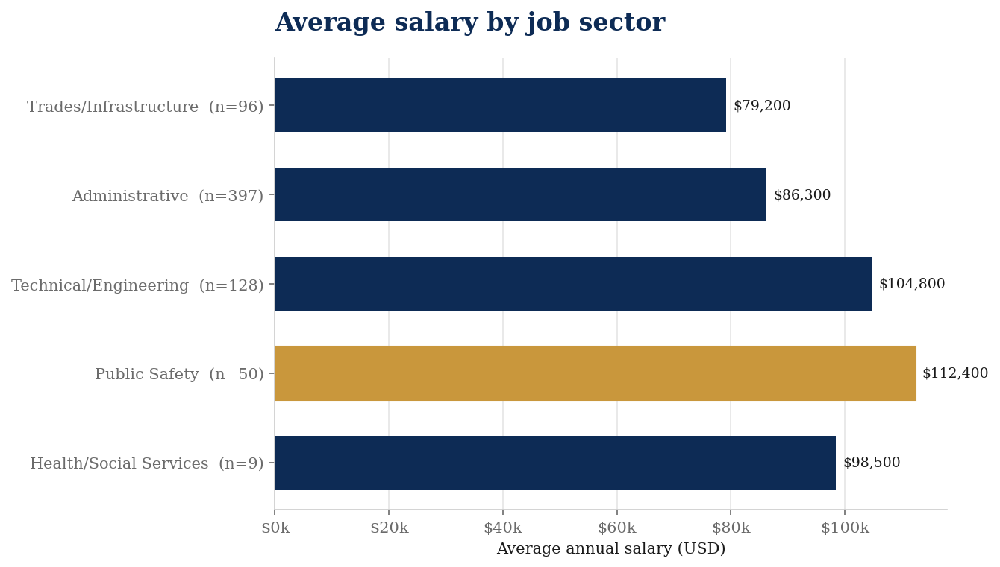
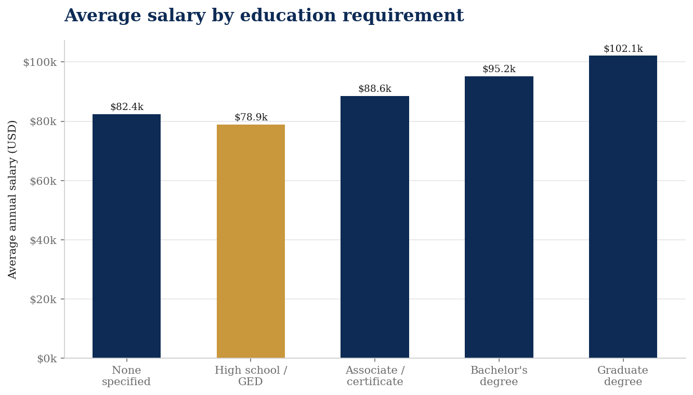
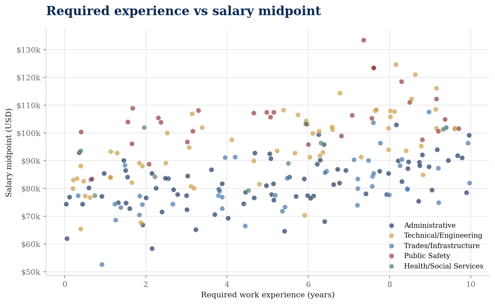
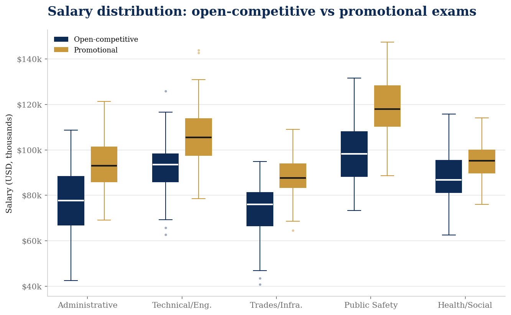

Chapter 03
Findings & Narrative
A project narrative followed by four visualizations: one argument about who the bulletins let in, told through salary, education, experience, and exam access.
Project narrative
A meritocracy, on paper.
The City of Los Angeles civil service system is often framed as a neutral meritocracy, where standardized examinations and formal credentials ensure fair access to stable, well-paying public employment. Our project argues instead that credential requirements and internal mobility structures in Los Angeles civil service job bulletins create unequal pathways to public sector employment and compensation, and that formal education requirements do not consistently predict higher salaries across job classifications. Using a corpus of approximately 683 City of Los Angeles civil service job bulletins, we parse and analyze information on salary ranges, minimum education and experience requirements, and exam access types (promotional versus open-competitive), and then classify jobs into sectors such as public safety, administrative, technical/engineering, trades, and health/social services. This dataset, drawn from official City job bulletins rather than experimental or hypothetical postings, allows us to connect the language and structure of civil service hiring to concrete pay ladders and access points. Because City employment has historically been a critical route to middle-class stability for working-class and minority communities in Los Angeles, examining who can access which classifications, under what credential thresholds and mobility rules, is central to understanding how the civil service system distributes opportunity and income.
Our project builds on and extends several strands of existing research on hiring language, credentialing, and public sector recruitment. Scholars such as Gaucher et al., Castilla and Rho, Hu et al., Burn et al., and Sievert et al. show that the wording of job advertisements — especially gendered, age-coded, or racialized language — can shape who feels they belong in particular roles and who actually applies, often reinforcing occupational segregation and inequality. Other work, including Heath et al., Leibbrandt and List, and Linos, evaluates how diversity statements and alternative framings of public sector job ads affect applicant attraction and diversity, sometimes in counterintuitive ways. At the same time, Brewer et al., Carpenter et al., Vogel et al., and Uggerslev et al. situate recruitment within broader debates about merit principles, public service motivation, and the staged nature of applicant attraction, while Fabris et al., Kobayashi et al., Senger et al., and Bolukbasi et al. examine computational methods and algorithmic hiring systems that can reproduce or mitigate bias. Yet much of this literature focuses on private-sector hiring, online recruitment platforms, or individual-level motivation rather than on highly formalized municipal civil service systems governed by rigid classification rules, examinations, and promotion structures. Questions remain about how credential requirements, exam access rules, and internal promotion pathways in public employment interact with salary structures, and how these institutional features shape who can enter and move within the civil service over time.
This project is important because it brings the insights of research on hiring language, credentialing, and recruitment into the specific context of a large municipal civil service system, where formal rules are often assumed to guarantee fairness. We are working on City of Los Angeles civil service job bulletins because we want to find out how credential requirements, experience thresholds, and internal-only promotional tracks actually relate to compensation across different job sectors, so that we can help others understand how a seemingly neutral merit system can still reproduce inequalities in access and pay. By using computational text analysis on an official corpus of public-sector job postings, we connect debates about gendered and racialized job language, public service motivation, and diversity messaging to concrete salary ladders and mobility structures in a real civil service regime. Our findings speak not only to scholars of public administration and labor markets, but also to policymakers, unions, and community organizations concerned with who can realistically access secure civil service jobs and under what conditions. In showing where education and experience requirements align — or fail to align — with higher pay, and how internal promotion rules may privilege existing insiders, we aim to make visible the institutional mechanisms through which public employment can either widen or narrow pathways to economic security and representation.
Reading the chapter
Each of the four sections below pairs one visualization with one research question from our project plan. Read across them and a pattern emerges: the bulletins reward sector identity and being already-inside the City more cleanly than they reward formal education on its own.
Average Annual Salary by City Job Classification Sector

Research question
How do average salary ranges across job classification types — public safety, administrative, technical/engineering, trades, and health/social services — reveal which kinds of labor the City of Los Angeles values most, and how do those valuations map onto broader hierarchies of class and race?
Meaning in context
Public Safety and Technical/Engineering anchor the top of the pay distribution; Administrative and Health/Social Services compress at the lower end. Sector identity, not credentials alone, already emerges as a structural driver of pay.
This visualization directly interrogates the thesis's claim about the differential valuation of labor. If Public Safety salaries significantly exceed those in Administrative or Health/Social Services roles, the chart makes a political choice visible: the City has historically invested its compensation structure in enforcement and infrastructure while paying caregiving, clerical, and social-service work at lower rates.
These sector hierarchies are not arbitrary. They track longstanding patterns in which fields are coded as masculine, technical, or high-status versus feminized, relational, or invisible. Because city employment has been a historically significant route to middle-class stability for communities of color in Los Angeles, where a sector lands in this ranking also reflects who has had access to those higher-paying classifications — and who has been concentrated at the lower end.
Health/Social Services, with only nine bulletins in the corpus, returns averages that are statistically thin. Throughout this site we read that bar as a question mark, not a finding.
Average Annual Salary by Required Education Level

Research question
Do higher formal education requirements in City of Los Angeles job bulletins consistently predict higher annual salaries across job classifications, or do credential requirements operate independently of compensation — functioning as access barriers rather than markers of valued expertise?
Meaning in context
The bars do not rise cleanly from left to right. This is the most direct empirical test of the project's thesis — and it fails the meritocratic prediction.
If education functioned cleanly as a wage signal, we would expect a tidy monotonic staircase from "No Formal Requirement" to "Graduate." Instead, jobs with no formal education requirement can out-pay jobs requiring a high school diploma, and bachelor's-required postings sit only modestly above associate-required ones. Many of the no-requirement bulletins are skilled trades and equipment-operator titles, where licensure and apprenticeship — not classroom years — gate the work and set the rate.
This undermines the rationale that education requirements serve as measures of job complexity and fair compensation. Instead, it suggests that credential requirements often function as gatekeeping mechanisms that filter applicants by background rather than as genuine predictors of what the work is worth.
For communities with unequal access to higher education — which in Los Angeles maps closely onto race and income — this has real consequences. It determines who can even apply, not just who will be paid fairly.
Required Work Experience vs. Annual Salary Midpoint by Sector

Research question
How does the minimum required years of work experience in City job bulletins relate to salary range midpoints across job classifications, and does accumulated work experience reliably translate into higher compensation — or do other structural factors disrupt that relationship?
Meaning in context
Experience requirements are often presented as a neutral proxy for skill and readiness, yet this chart reveals that the relationship between experience and pay is far more complicated.
Some of the highest-salary roles in the corpus require very little formal prior experience — because they are primarily reached through internal promotion, not entry-level hiring. Conversely, some roles requiring four or more years of documented experience still offer salaries that lag behind less-credentialed but better-compensated sectors.
This disrupts the meritocratic narrative that more experience earns more pay, and points instead to sector identity, union structure, and the City's own historical investment decisions as the actual drivers of compensation. Color-coding by sector makes the structural story visible: Public Safety and Technical/Engineering clusters occupy the upper salary range regardless of experience level, while Administrative points cluster lower at every tier.
In the context of the thesis, this also raises the question of who can afford to accumulate years of qualifying experience before accessing these positions — again a question shaped by race, class, and neighborhood.
Salary Midpoint Distribution: Promotional vs. Open-Competitive Exams by Sector

Research question
What does the distribution of salary ranges for internally-restricted (promotional) versus open-competitive City job classifications reveal about who the civil service structure rewards, and how does the internal mobility advantage vary across job sectors?
Meaning in context
The civil service system is formally designed to be a meritocracy open to all residents. This visualization tests whether the internal promotional structure effectively creates a two-tier system.
If promotional-only roles consistently show higher salary midpoints and lower salary overlap with open-competitive roles — particularly in sectors like Public Safety or Technical/Engineering — it constitutes strong evidence that the civil service functions as a credentialing escalator for insiders while presenting a lower ceiling to external applicants.
This matters enormously for first-generation applicants, those who lack a family or community connection to City employment, and those who were historically excluded from the initial hiring wave that built the City's current workforce. The internal mobility structure does not just reward experience — it rewards the accident of already being inside.
Read alongside Finding 02, this is where the thesis lands: formal education does not consistently predict salary, but already being on the City payroll does. Internal mobility, more than degree attainment, is the structural advantage the bulletins reveal.
Conclusion
What the bulletins say about access.
Key takeaways
- →Sector, not degree alone, is a strong predictor of salary in the corpus.
- →The return on a degree is non-monotonic across education tiers — credentials sort applicants more cleanly than they pay them.
- →Required experience pays — at very different rates in different sectors.
- →Promotional exam pathways consistently out-pay open-competitive ones, especially in Public Safety and Technical/Engineering.
- →Together, these patterns make visible an institutional architecture in which a "merit" system still reproduces unequal access.
Limitations
- — Bulletins describe stated requirements, not hiring outcomes.
- — No individual applicant data, exam scores, or hire records.
- — Snapshot in time; salaries are not CPI-adjusted across publication dates.
- — Five-sector classification is a researcher choice and condenses real heterogeneity.
- — Health / Social Services subsample (n = 9) is too thin for confident claims.